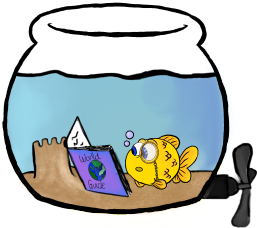
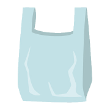

Great Barrier Reef

Gull-Ivar var veldig klar på at han ville se Great Barrier Reef da han skulle ut å reise.
Han hadde fått med seg at mange av koralene var døende og han ville se korallrevet før det ble borte eller mindre.
Han måtte innrømme at selv om han hadde lest at det er veldig sjelden at haiene der angriper mennesker
og at du kan anse deg som heldig hvis du ser en hai der var han litt usikker på hvor ofte de angrep gullfisker.
Uansett hvor mye han lette etter svaret eller statistikk så kunne han ikke finne noe informasjon om haiangrep på gullfisk.
Han visste ikke om dette var en bra eller dårlig ting!
Fakta med Gull-Ivar!
Det er over 1500 ulike fiskearter i Great Barrier Reef
Over 10% av alle verdens fiskearter kan du finne i GBR!

Korallene vokser over gamle døde koraller. De eldste korallene kan være så gamle som 20 millioner år!
Noe som er enda eldre enn koralene er enkelte av fiskeartene der som slekter på fiskearter som går 500 million år tilbake i tid!
Du kan faktisk see Great Barrier Reef fra verdensrommet.
Det hadde Gull-Ivar syntes vært veldig morsomt, men han har kanskje opplevd nok spenning for en reise?

Et dypere dykk med Gull-Ivar
Gull-Ivar sier at du kan holde over et eller flere av kortene hvis det er noe annet du vil lese om
Koraller
Koraller
Great Barrier Reef er verdensstørste korallrev.
Det er over 3000 mindre korallrev i GBR og 300 koralløyer.
Dette gjør det til et av verdens desidert mest avanserte økosystemer.
Fremtiden?
Dør revet?
Det er dessverre slik av korallrevet er døende.
Studier viser at det er halvparten så få levende koraller i revet nå enn det var i 1995.
Vannet blir varmere som gir korallene dårligere levevilkår.
I tillegg er det mye forurensning i vannet som fører til at det blir mye flere sjøstjerner. Disse sjøstjerne spiser korallene.
Nok et menneskeskapt problem er forsøpling som ikke er bra for noe liv i revet.
Diverse
Diverse
Great Barrier Reef er den største "levende" tingen vi har på jorden.
Hele korallrevet er 2300 kilometer langt.
Korallrevet tiltrekker over 2 000 000 turister hvert år(sannsynligvis mindre i år mtp. Covid-19).
Du trenger 70 000 000 fotballbaner for å få samme arealet som korallrevet.